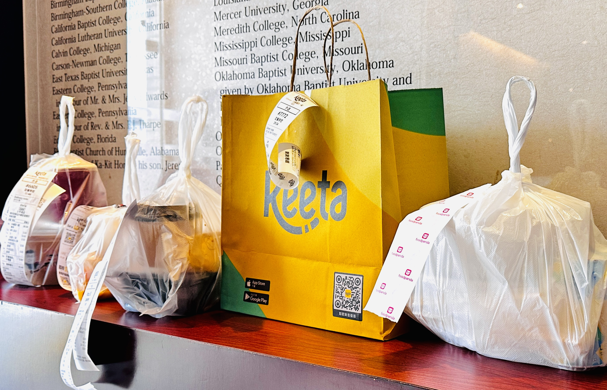
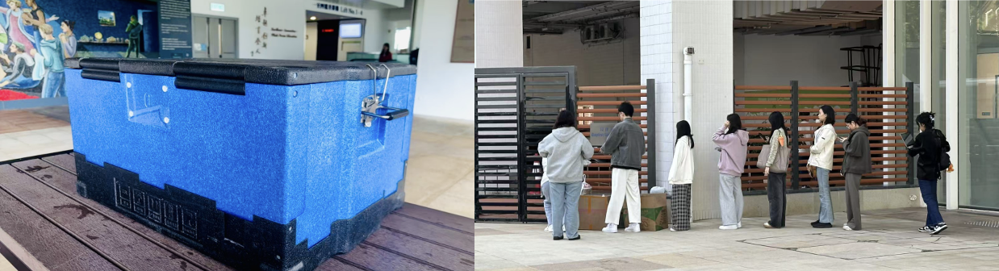

中午时分，香港浸会大学教学与行政大楼外，一位年轻女生将一个大箱子从货车上搬下，摆放在大学的休息平台上。箱子里装着的是同学们提前一天通过一个团体用餐平台订购的餐食。她站在箱子旁，静待同学们前来领取自己的午餐。
这并不是一个典型的外卖场景。没有急促的电话催促，也没有穿梭于街道和电梯间的“外卖小哥”。这位送餐员显得从容不迫，她的任务很简单——只需等到平台专用餐车抵达，将餐食分发给同学们即可。
这样的画面，正在香港的大学校园中变得越来越普遍。对于学生、创业者和整个外卖行业来说，这种校园外卖方式是否会成为未来的新常态？
图片来源：记者拍摄
2023年3月，一个拥有澳门血统，名叫WeBite的团体用餐平台在香港开启了它的成长之路，它的口号是“打造全球领先的团体用餐平台”。其业务模式聚焦于多元供给、集中配送、落地服务和数码化。 浸会大学毕业生李思睿是WeBite的创始人之一。起初，他以职场人士为主要目标人群的定位，但一年之后他发现校园送餐有很大市场，并将浸会大学作为第一个试点学校。随后，许多类似的校园团餐的外卖配送平台也相继出现，为香港的大学生提供着便捷的用餐服务。 从职场到校园，从传统的单点外卖到集中配送的团体服务，外卖行业的传统模式正在悄然转变，而这背后，究竟隐藏着怎样的故事？
//数据来源： Rakuten Insight, Most used apps for food delivery orders in Hong Kong as of April 2023. Statista
每天打开手机，满屏的外卖优惠券和打折活动似乎让人觉得，外卖市场依然火热。然而，隐藏在这场‘价格战’背后的却是一个逐渐饱和的市场，巨头们正在为争夺最后一块蛋糕而苦苦挣扎。 香港市场上现存的三大外卖巨头是分别是Foodpanda, Deliveroo 和 KeeTa。 由中国大陆品牌进军香港市场的外拍平台KeeTa涨势很强，根据 Measurable AI的数据，Keeta在24年第一季度，就以订单数量占据香港外卖市场 43% 的份额，首次超过同期份额为 37% 的 Foodpanda。并且KeeTa的商品交易总额(GMV) 在不到一年时间里占据了近三分之一的市场。
香港大学中国商业学院客席讲师关启正提到，“外卖市场已经从高速增长阶段进入饱和期，新用户的增长空间有限，行业竞争正在转向存量市场的争夺。” 三家公司逐渐从单纯的服务竞争转向补贴和价格战。 作为早期进入市场的Foodpanda，拥有庞大的用户群和合作餐厅网络。它通过提供多样化的选择和频繁的促销活动巩固市场份额。不过，随着市场趋于饱和，Foodpanda在高端市场上的表现显得疲软。 Deliveroo凭借其对高端用户群的定位，在香港外卖市场中占据一席之地。通过会员服务（如Deliveroo Plus）和优质餐厅的独家合作，它吸引了许多忠实用户。然而，高端市场的规模有限，增长速度放缓。 作为新兴玩家，Keeta以激进的价格战在短时间内迅速抢占市场。通过提供大幅度折扣和补贴，Keeta吸引了大量价格敏感型用户，并向市场老玩家发起了强有力的挑战。然而，这种策略的可持续性受到质疑，因为在巨额补贴的背后，Keeta的盈利能力备受考验。消费者可能已经习惯了Keeta的“超低价”，但一旦优惠减少或停止，用户留存率可能会大幅下降。
关启正博士解释道，“Keeta的营销模式是先烧钱，不计成本的建立客户网络”，这实际上是在运用价格战的打法，拉拢到大量的客户。将市场基本垄断后，逐步紧缩优惠力度。
美因茨大学教授Heil和香港科技大学教授Helsen很早就提到，“价格战是市场竞争中最严重的形式之一，会造成巨大损失。”
在这种情况下创业者想要进入到食物的配送市场需要跳脱出传统外卖行业的思维束缚，寻求创新和差异化。
李思睿谈及其创业契机，他直言：“当我某天不想出门决定点外卖时，注意到香港的外卖配送费太高，所以开始思考在香港做外卖是不是也能有一个出路。”
2023年，李思睿携WeBite进入香港外卖市场，与同期进入的Keeta形成错位竞争。不同于Keeta的个人外卖业务，WeBite专注于团体用户，采用类似“拼多多”的团购模式，为大学和企业提供团体订餐服务。
相较于传统外卖送餐到户的模式，WeBite的核心区别在于"集中配送+指定地点自取"：平台通过用户提前一天下单，将订单集中处理后统一送达学校或企业的固定取餐点，而非逐一配送到门。这种模式不仅降低了配送成本，还减少了骑手的需求和物流压力。
李思睿将自己的创业策略总结为：“打地盘，稳地盘，固地盘。”
他解释道，短期目标是通过中央厨房与更多的合作伙伴建立联系，确保午餐配送收入的稳定性，并以此作为公司的固定收入来源。其后再进一步将业务范围拓展至下午茶或晚餐等服务，进一步巩固市场地位并实现长期稳定收益。
李思睿的创业之路并非一帆风顺，但他始终保持对市场和用户需求的敏锐洞察。在考察香港中文大学的金融食堂项目时，他主动与学生交流，为企业寻找新的发展方向。“有同学向我表达了希望能和朋友坐下来一起吃饭的意愿，小火锅、烧烤这些会是我下一步的推出的菜品”他透露道。在交谈中，他认识到了港人的独特喜好——聚餐文化，是香港市场中值得深挖的机会。
另一方面，李思睿深知顾客对团餐配送的食品安全和品质可能存有疑虑。对此，他强调其企业具备所有传统牌照，顾客需提前一天订餐以供WeBite提前采购食材并新鲜制作和切配，使其出品食物拥有一定的质量保证。在派送时间将装满盒饭的含有保暖隔层的保温箱装载到面包车上，按照制定好的路线前往送餐。
李思睿对WeBite的扩展充满信心。目前，WeBite正在与香港的144家米其林餐厅和必吃榜上的“社餐”企业寻求合作，期望进一步打开品牌的知名度。
当最后一位学生取走餐食，送餐员轻轻关上箱子，准备下一次的配送任务。这背后承载的，是一场关于“胃”与“味”的新革命......